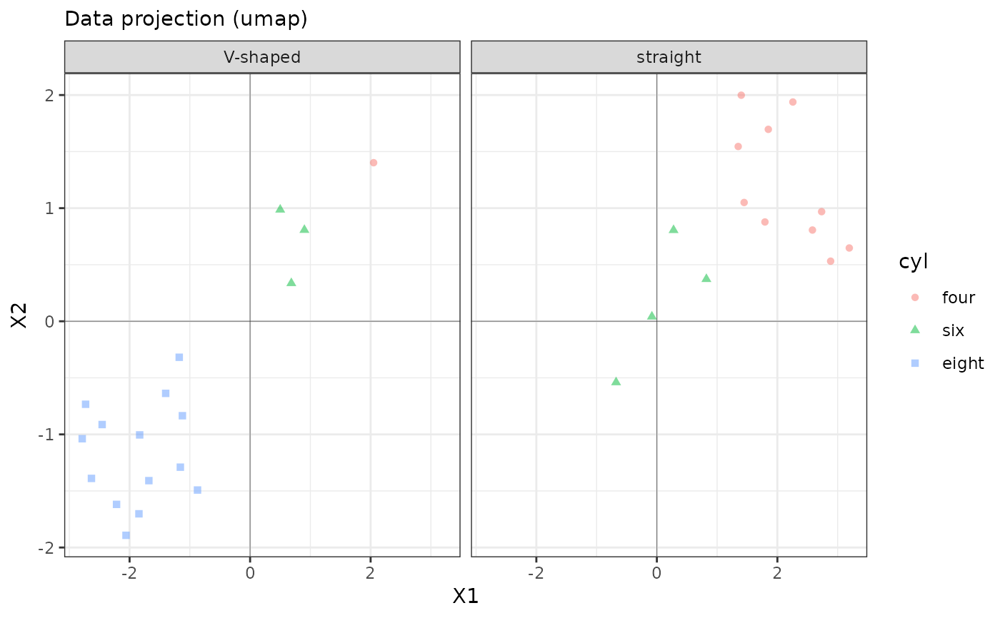

UMAP is very fast and seems to separate better than slower t-SNE.
e_plot_projection(
dat_plot = NULL,
var_group = NULL,
var_color = NULL,
var_shape = NULL,
var_facet = NULL,
text_title = NULL,
sw_print = FALSE,
sw_projection = c("umap", "tsne")[1],
n_obs_sample = NULL
)data to plot
variable name to exclude from projection, but may be used for plotting
variable color
variable shape
variable to by which to facet wrap
text for title of plot to override default
T/F whether to print plot
Projection type: "tsne" (others to come)
number of observations to sample from data since projection calculation can be very expensive for large samples (only for tsne)
e_plot_projection(
dat_plot = dat_mtcars_e |> dplyr::select(mpg, cyl, disp, hp, vs)
, var_group = NULL
, var_color = NULL
, var_shape = NULL
, var_facet = NULL
, text_title = NULL
, sw_print = FALSE
, sw_projection = c("umap", "tsne")[1]
, n_obs_sample = NULL
)
e_plot_projection(
dat_plot = dat_mtcars_e |> dplyr::select(mpg, cyl, disp, hp, vs)
, var_group = "cyl"
, var_color = "cyl"
, var_shape = "cyl"
, var_facet = "vs"
, text_title = NULL
, sw_print = FALSE
, sw_projection = c("umap", "tsne")[1]
, n_obs_sample = NULL
)
